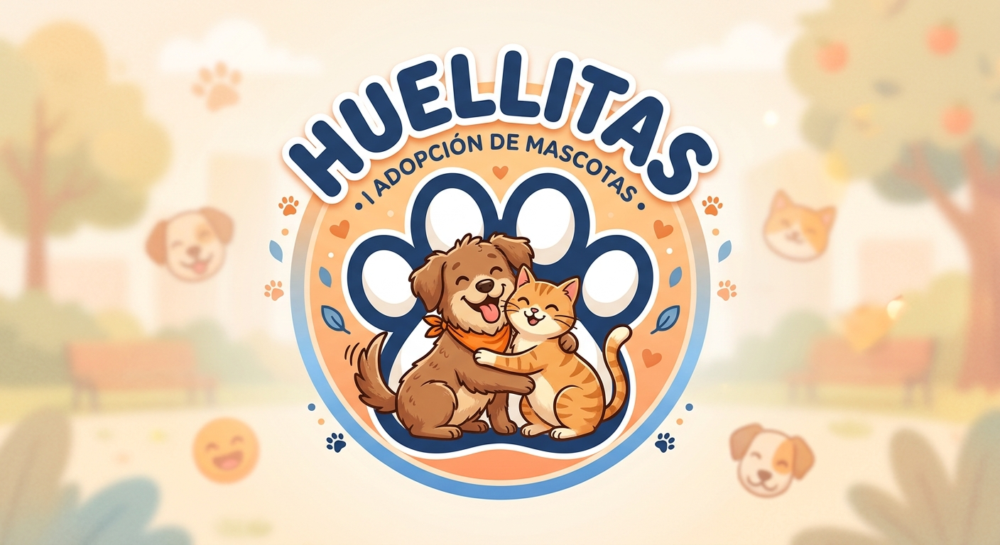
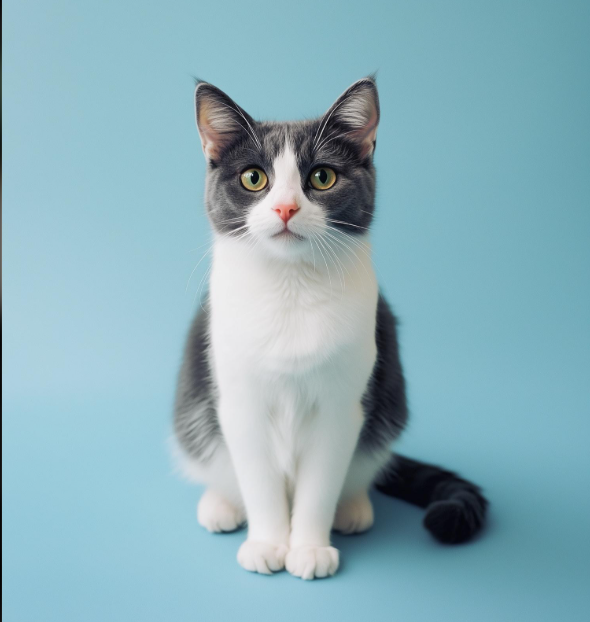
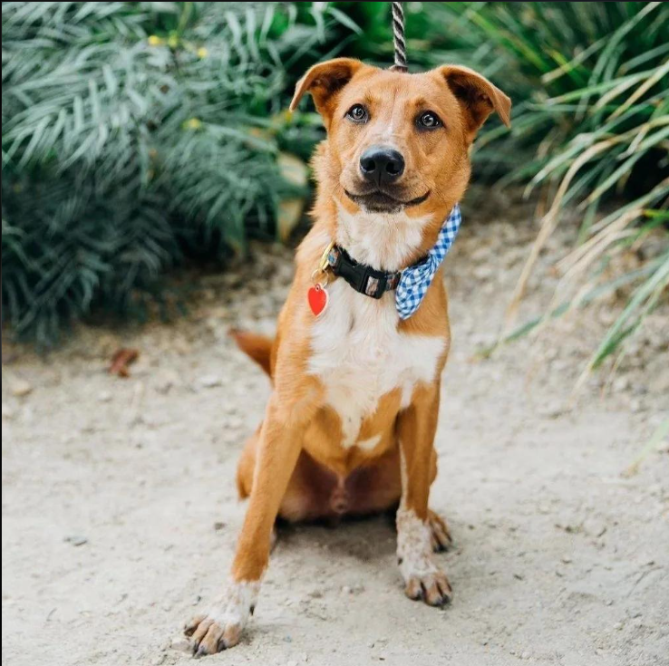

Un hogar lleno de amor comienza con una adopción
Conoce a nuestros peluditos y encuentra ese compañero especial que está esperando una familia.
Conocer mascotas

Huellitas de AmorConoce a nuestros peluditos y encuentra ese compañero especial que está esperando una familia.
Conocer mascotas
Somos una plataforma que busca conectar mascotas que necesitan un hogar con personas dispuestas a brindarles cariño, protección y una segunda oportunidad.
Conoce algunos de nuestros amigos disponibles para adopción.


El proceso es sencillo. Solo debes seguir estos pasos.
Explora las mascotas que están buscando una familia.
Completa el formulario con tus datos personales.
Espera la revisión de tu solicitud y comienza una nueva historia.